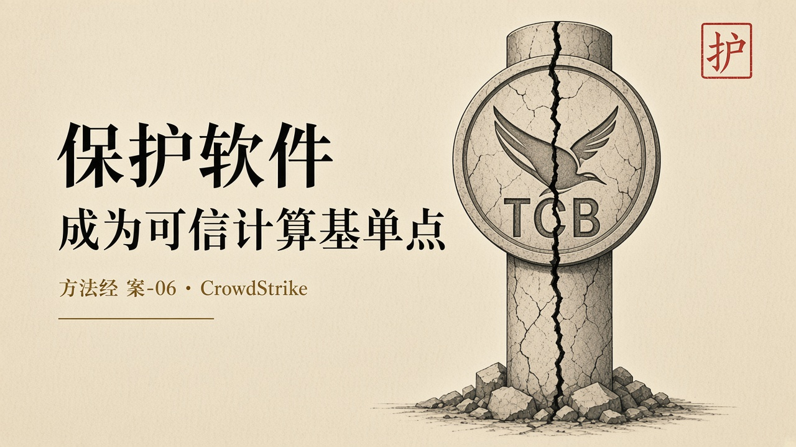
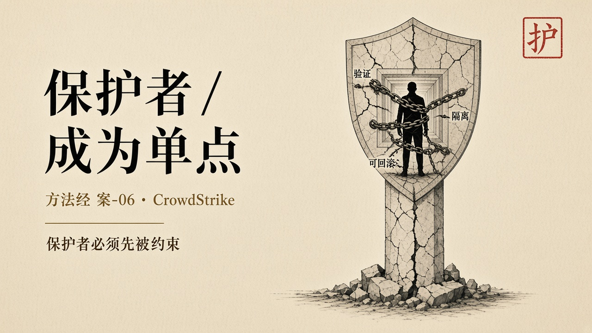

经过
2024 年 7 月 19 日 04 时 09 分（UTC），CrowdStrike 向 Falcon 传感器推送一次配置更新。这类更新每天要推送多次，属于例行操作。编号 291 的通道文件含有逻辑错误，传感器发生越界内存读取，Windows 蓝屏。微软估计受影响设备至少八百五十万台，真实范围被认为更大。不到百分之一的设备，切断的是航班、手术与柜面。CrowdStrike 很快发现错误：七十八分钟后，即 05 时 27 分（UTC）之后时间戳的文件已经修正。对已经陷入引导循环或恢复模式的机器没有意义——一台无法启动的机器，无法自动接收修复。
这不是一次普通的软件缺陷。它是一次关于信任位置的事故。Falcon 被设计为保护端点。为了在攻击者之前看到系统的每一个动作，它运行在 Windows 内核——操作系统最特权、最不可隔离的位置。Falcon 的任何缺陷都直接成为操作系统的缺陷。一次配置更新——不是一次软件版本升级——就可以绕过操作系统的全部质量门禁，直接进入全球数百万台设备的内核。用来保护系统的软件，成为了摧毁系统的单点。
保护者成为了最大的风险源。不是因为 CrowdStrike 的工程师不称职，而是因为系统设计把一个第三方的配置更新通道放进了可信计算基，却没有给这个通道配上与其权限相称的约束。内核驱动有数字签名。签名证明的是「这段代码来自 CrowdStrike」，不是「这次配置更新不会让机器无法启动」。身份不是行为。证书链回答「谁签的」，不回答「这一次推送是不是仍在被允许的行为空间里」。

剖析
定义上，托付是保护端点，使业务继续。禁区是不得让保护软件自己把主机打进无法启动。禁区弱于能力：配置更新通道被赋予了内核级的到达能力，却没有被赋予与之相称的验证。配置因为「不是代码」而常逃过与版本升级同等的门禁。横切变更会把已经做过的保证重新打开。这一次打开的不是一个模块，是全球同时开机的内核。TCB 一旦包含持续自动更新的外部组件，系统的可信性上限就是那一次发布流程。
对齐失败发生在「谁被信任」与「什么被检查」之间。写下的是保护。跑着的是一次有缺陷的配置文件。世界上发生的是航空、医院与银行同时停摆。保护软件的使命与操作系统的使命在那一时刻互相取消。乘客、患者、存款人是托付者。他们没有把托付签给 291 号通道文件。
达成若等于传感器覆盖率、更新到达率，那天凌晨系统高度达成。更新发出去了，设备收到了，内核加载了。按运行指标，保护网在工作。按托付，保护网把被保护对象锁在启动循环里。上线、推送成功、签名验证通过，都不是达成。达成要问：这一次更新之后，主机是否仍能启动、业务是否仍能继续、保护是否仍是保护。
可信计算基必须闭合。走进内核的第三方，必须被当作 TCB 的一部分来约束：最小权限、可回滚、可隔离、更新本身可被验证、失败时不得剥夺主机启动。七十八分钟的修复对已进循环的机器没有意义，说明回滚不在那条路径上。回滚若需要一台已经死掉的机器去下载补丁，回滚只是文档。
人的位置被推到机场柜台与医院值班室。立法在供应商合同里写的是保护端点。划界没有把配置更新写成与内核驱动同等的变更。审判发生在蓝屏之后，由现场的人在已经无法启动的机器上清除文件。把恢复交给已经无法开机的现场，不是让人承担使命。
它与 Therac-25 是同一类托付转移，只是规模换成了全球。保护从操作系统与物理隔离，转到一家供应商的内核传感器，再转到一条配置通道。通道无法被盘问的那天，信任经营失败。2024 年已经证明：软件缺陷引发系统性后果，不是极端个别事件。
